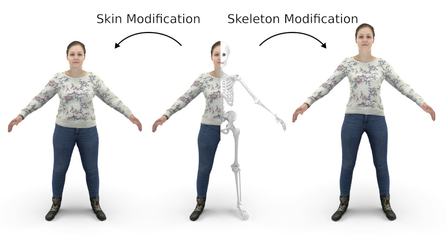
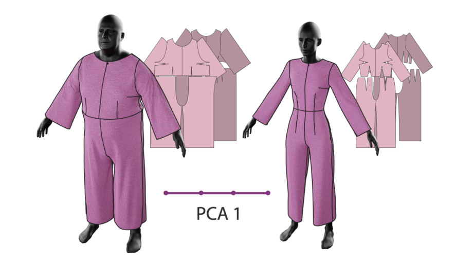
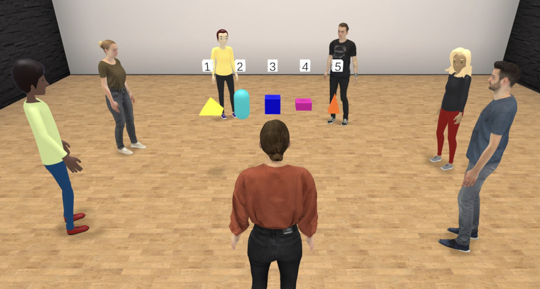
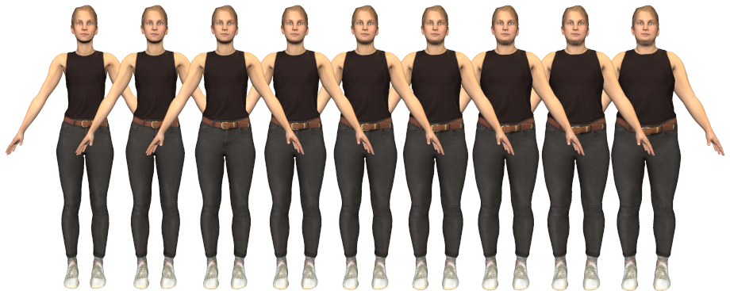
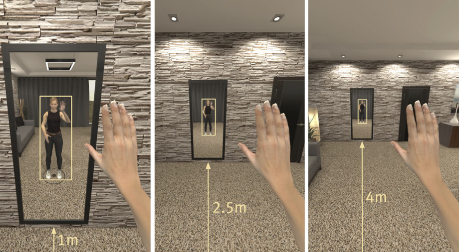
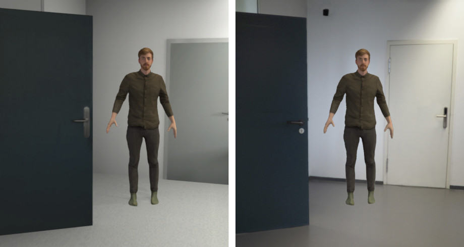
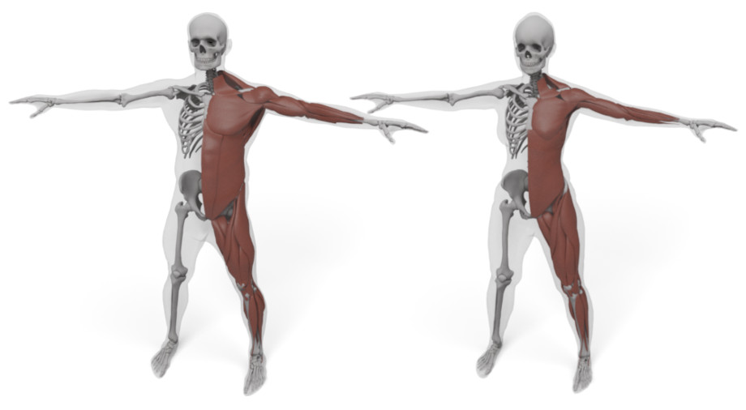
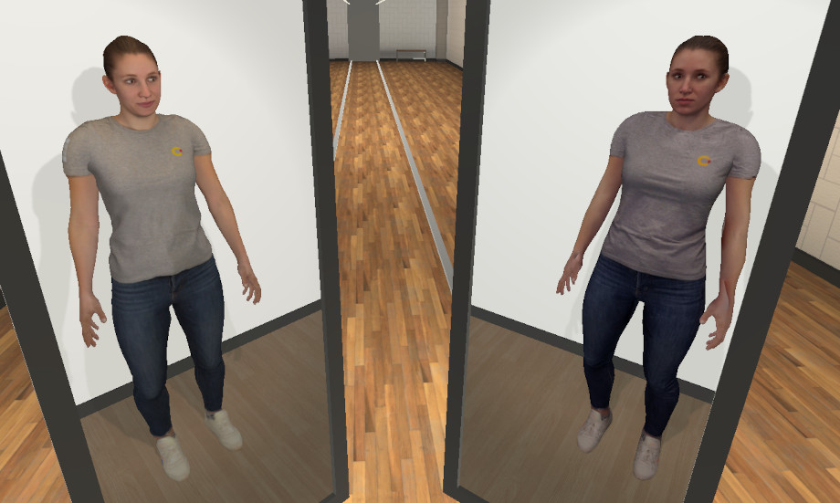
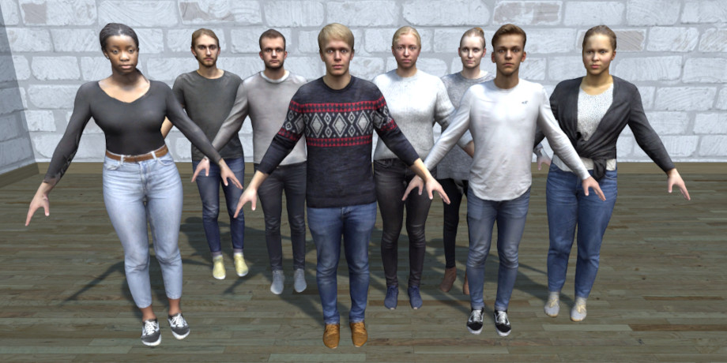

2024
TailorMe: Self-Supervised Learning of an Anatomically Constrained Volumetric Human Shape Model
Stephan Wenninger, Fabian Kemper, Ulrich Schwanecke, Mario Botsch

2024
GarmentCodeData: A Dataset of 3D Made-to-Measure Garments With Sewing Patterns
Maria Korosteleva, Timur Levent Kesdogan, Fabian Kemper, Stephan Wenninger, Jasmin Koller, Yuhan Zhang, Mario Botsch, Olga Sorkine-Hornung

2024
Am I the Odd One? Exploring (In)Congruencies in the Realism of Avatars and Virtual Others in Virtual Reality
David Mal, Nina Döllinger, Erik Wolf, Stephan Wenninger, Mario Botsch, Carolin Wienrich, Marc Erich Latoschik

2022
Resize Me! Exploring the User Experience of Embodied Realistic Modulatable Avatars for Body Image Intervention in Virtual Reality
Nina Döllinger, Erik Wolf, David Mal, Stephan Wenninger, Mario Botsch, Marc Erich Latoschik, Carolin Wienrich

2022
Does Distance Matter? Embodiment and Perception of Personalized Avatars in Relation to the Self-Observation Distance in Virtual Reality
Erik Wolf, Nina Döllinger, David Mal, Stephan Wenninger, Andrea Bartl, Mario Botsch, Marc Erich Latoschik, Carolin Wienrich

2022
Plausibility and Perception of Personalized Virtual Humans between Virtual and Augmented Reality
Erik Wolf, David Mal, Viktor Frohnapfel, Nina Döllinger, Stephan Wenninger, Mario Botsch, Marc Erich Latoschik, Carolin Wienrich

2021
Inside Humans: Creating a Simple Layered Anatomical Model from Human Surface Scans
Martin Komaritzan, Stephan Wenninger, Mario Botsch

2021
Affordable but not Cheap: A Case Study of the Effects of Two 3D-Reconstruction Methods of Virtual Humans
Andrea Barl, Stephan Wenninger, Erik Wolf, Marc Erich Latoschik, Mario Botsch

2020
Realistic Virtual Humans from Smartphone Videos
Stephan Wenninger, Jascha Achenbach, Andrea Bartl, Marc Eric Latoschik, Mario Botsch